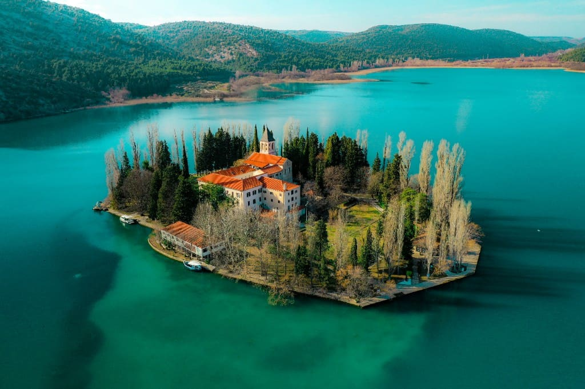

Krka National Park
Krka is known for its stepped waterfalls, river scenery, and walking trails through forest and rock. Skradinski Buk is the park’s famous cascade area—ideal for a relaxed nature day.
The park is an easy drive from the Šibenik hinterland, making it a practical outing when you want shade, freshwater swimming where permitted, and dramatic views without a long journey.